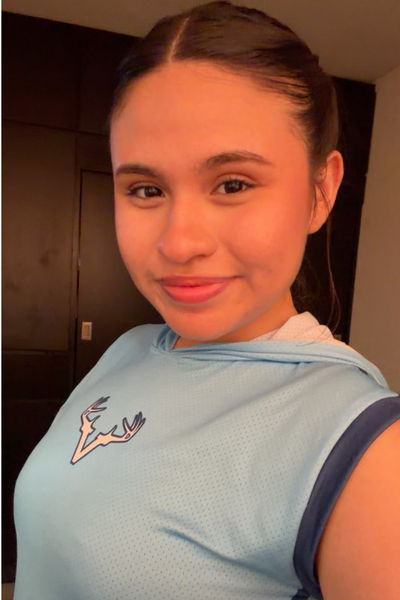
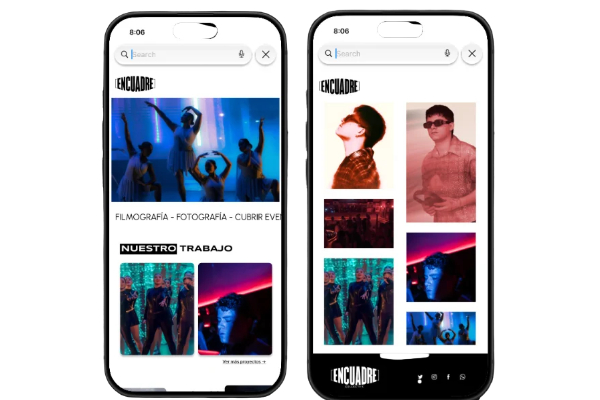
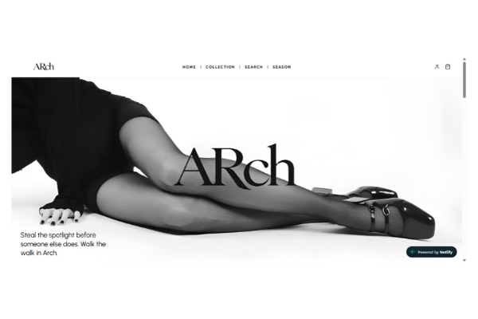

Me interesa explorar cómo la inteligencia artificial y el análisis de datos pueden transformar la manera en que las personas interactúan con la tecnología y las marcas.
Actualmente estoy ampliando mis conocimientos en estas áreas, especialmente en análisis de datos y bases de datos, con el objetivo de integrar estas herramientas en la creación de experiencias digitales más inteligentes, útiles y personalizadas.

Mi nombre es Carmen Alvarado Reyes y soy estudiante de Ingeniería en Tecnologías de la Información e Innovación Digital. Me interesa la tecnología desde una perspectiva creativa, especialmente el diseño y desarrollo de interfaces, la experiencia de usuario y la creación de productos digitales.
Disfruto transformar ideas en soluciones visuales y funcionales, combinando diseño, estructura y tecnología. También tengo interés en la fotografía, la identidad de marca y el marketing digital.
Me caracterizo por ser una profesional adaptable, empática y con sólida gestión del tiempo (Time Management), lo que me permite organizar flujos de trabajo eficientes y cumplir metas bajo presión. Destaco por mi comunicación asertiva, pensamiento crítico y capacidad de aprendizaje continuo para colaborar de forma armónica en proyectos multidisciplinarios.
Dominio en diseño UI/UX con Figma, desarrollo web/móvil y programación con arquitectura POO (Java y Lenguaje C). Cuento con formación acreditada en redes (Cisco CCNA: Introducción, Switching, Routing y Wireless), gestión de bases de datos relacionales, prototipado electrónico con Arduino y certificación de idioma inglés TOEFL ITP.
Es un sistema de gestión para lavanderías que permita optimizar y centralizar los procesos administrativos y operativos, facilitando el control de pedidos, clientes, inventario, maquinaria y recursos.
Ver repositorio ›Proyecto de diseño y desarrollo web para un colectivo de fotografía y producción audiovisual. Busca crear una presencia digital que refleje su identidad visual, destaque su trabajo y facilite a los visitantes explorar sus proyectos y servicios mediante una experiencia intuitiva y atractiva.
Ver repositorio › Ver sitio web ↗
Concepto de marca de calzado femenino especializado en tacones y botas. El proyecto se enfoca en desarrollar una identidad visual moderna y minimalista, acompañada de una propuesta digital de ecommerce que permita presentar los productos y ofrecer una experiencia de compra sencilla, visual y coherente con la personalidad de la marca.
